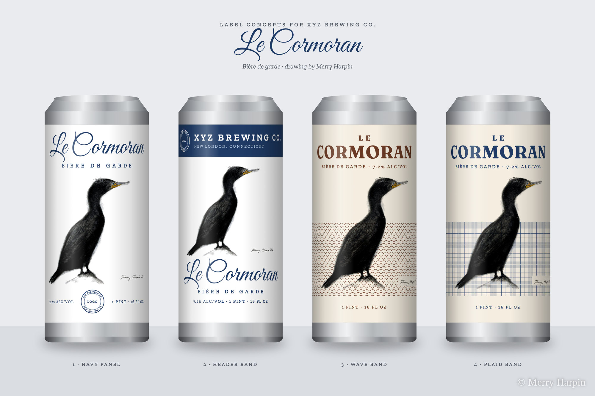

Label design
Beer Can Concepts
A bière de garde in four directions: a navy panel, a header band, a wave band inspired by an old French mug, and a plaid band.
- StyleBière de garde
- DrawingCharcoal cormorant
- Format16 oz can
Label and packaging design, built around my drawings.
Beer can labels built around the charcoal cormorant from my Birds of New England 2027 calendar.

Label design
A bière de garde in four directions: a navy panel, a header band, a wave band inspired by an old French mug, and a plaid band.
Interested in label, packaging or brand work? Get in touch. My own brand is MFA.